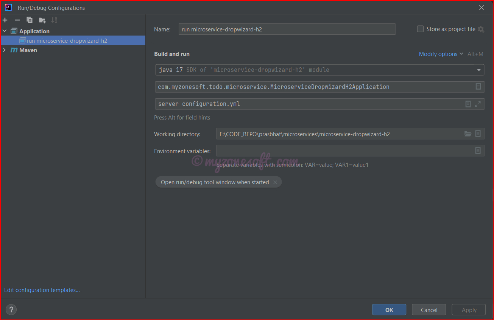
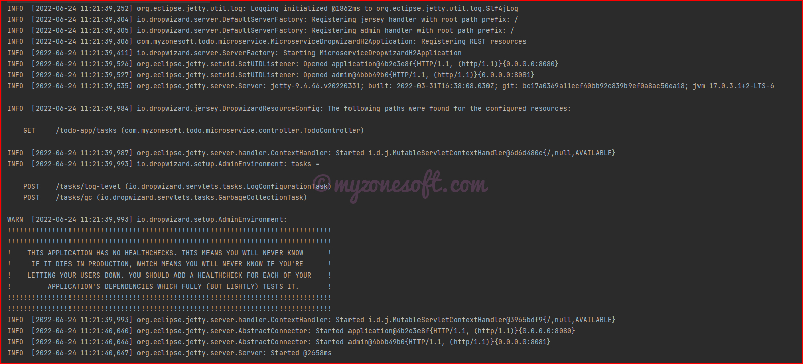
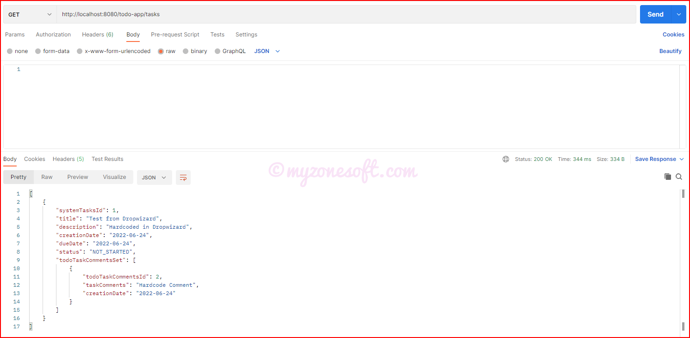
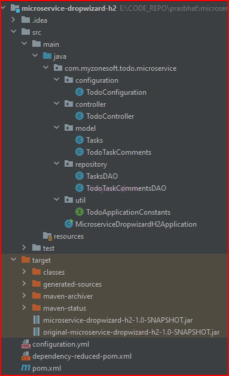
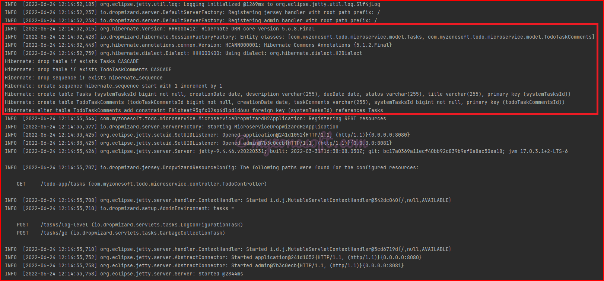
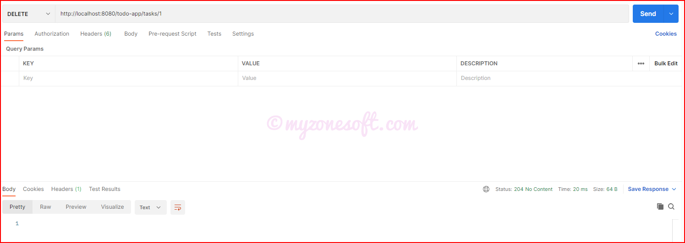

In this article, I will develop a Microservice Application using Dropwizard Framework and H2 Database and expose all CRUD (Create, Read, Update, Delete) Operations as the REST APIs.
Dropwizard Framework will serve as back-end server and I will be using Relational Database known as H2 Database, it is also known as an Embedded Java Database, for persisting(storing) the data.
By the end of this article, you would learn about how to:
Configure Hibernate to work with Relational Database and persist the data.
Create and Expose REST APIs for CRUD Operations using Dropwizard Framework.
How to handle HTTP and CORS Requests through REST Controller.
Overview
We will build a Rest CRUD API using Dropwizard Framework for a Todo Task Application in that:
Each Todo Task has id, title, description, creation date, due date, status and comments.
APIs help to Create, Read, Update, DeleteTodo Tasks.
Below mentioned are the REST APIs for CRUD Operations using Dropwizard Framework.
Description
CRUD Operation
HTTP Method
REST API Endpoint
Create New Todo Task
CREATE
POST
/tasks
Fetch All Todo Tasks
READ
GET
/tasks
Fetch One Todo Task
READ
GET
/tasks/{id}
Update One Specific Todo Task
UPDATE
PUT
/tasks
Delete One Specific Todo Task
DELETE
DELETE
/tasks/{id}
If you have no time to read this article, but want to try the code for yourself, GitHub location is provided here. Go ahead and clone the code repository.
Definitions
Dropwizard is an open source Java Framework for the rapid development of REST APIs. Dropwizard is kind of ecosystem which contains all the dependencies (such as Jersey, Jackson or Jetty) from the Java ecosystem into a simple, light-weight package that lets you focus on getting things done.
Microservices is an architecture that allows the developers to develop and deploy services independently. Each service running has its own process and this achieves the lightweight model to support business applications. One of the most popular types of APIs for building Microservices applications is known as “RESTful API” or “REST API”.
REpresentational State Transfer (REST) is an architectural style that defines a set of constraints to be used for creating web services. REST API is a way of accessing web services in a simple and flexible way without having any processing. All communication done via REST API uses only HTTP request.
Application Programming Interface (API) is a software intermediary that allows two applications to talk to each other. To simplify, an API delivers a user requests to a system and sends the system’s response back to a user.
Prerequisites
There are some prerequisites that are required for creating the Microservice Application using Dropwizard.
Familiarity with Technology and Frameworks
It is assumed that you have prior knowledge or familiarity with Java Technology, Jetty, Jersey, Jackson, Hibernate Frameworks, working with RDBMS databases and basic SQL commands, because I will not be covering the basics of these in this article.
If you are not familiar, then it is advised to get the basic knowledge of these before continuing.
JDK 1.8+
Download the latest version of the Java JDK (1.17 is the latest LTS version, at the time of writing this article) from here. Click on the downloaded .exe and complete the installation.
Since it is an Oracle Proprietary product you will need to sign-in/create Oracle Account, before downloading.
Integrated Development Environment (IDE) for Code Development
You can use any IDE of your choice. I will be using the IntelliJ IDEA Community Edition.
If you wish to use the IntelliJ IDEA Community Edition, download the latest version from here.
Click on the downloaded .exe and complete the installation.
Other related software
Web Application– Jetty is embedded in the Dropwizard Framework and can be used as Web application for running this project.
Project Management Tool– Dropwizard Framework officially supports Maven, so we are going to use it in this project.
Create Base Dropwizard Project
Let me first create the Base Dropwizard Project, the basic project without any of the customization. Later I will enhance it with different methods, to include CRUD Operations and Expose REST APIs, as discussed above.
Create Dropwizard Project using Maven
There are two options for creating the project using Maven.
Using Command Prompt
Move to the folder where you want to create the project and open the command prompt.
That’s it. This will download all the required dependencies to your project. The current Dropwizard version is 2.1.0.
Libraries included inside dropwizard
Once you include dropwizard into your project, you get following libraries added to your classpath.
Jersey – For building RESTful web applications. It allows you to write clean, testable classes which gracefully map HTTP requests to simple Java objects.
Jetty – Dropwizard uses the Jetty HTTP library to embed an HTTP server directly into your project.
Jackson – For object to/from JSON conversion. It allows to export your domain models directly with JAXB annotations.
Guava – highly optimized immutable data structures to speedup development.
Logback and SLF4j – for performant and flexible logging.
Hibernate Validator – an easy declarative framework for validating user input and generating helpful and i18n-friendly error messages.
Apache HTTPClient – For both low- and high-level interaction with other web services.
JDBI – the most straightforward way to use a relational database with Java.
Liquibase – to keep your database schema in check throughout your development and release cycle.
FreeMarker and Mustache – are simple templating systems for more user-facing applications.
Joda Time – very complete and sane library for handling dates and times.
Building Fat JARs
To add build and package support to our project, we will use the maven-shade plugin, which will allow us to package our project completely, along with its dependencies, into a single standalone JAR file (Fat/Uber JAR) that can be distributed and executed as is.
An Application Class is entry point for any Dropwizard Project. It needs to extend the io.dropwizard.Application class and implement its the run(Configuration, Environment) method. They prepare the runtime environment of the application.
To invoke the run method, you will need to have public static void main(String[] args) {} method, which will be invoked by java -jar command when you run the application as jar file.
In the run method, we need to register all the Resource/Controller Classes later.
Create Representation/Model Class
Representation is what holds the data and serialized into JSON. It’s Model for RESTful application. When using Jersey with Jackson, all you need to build a resource representation is – a simple POJO following Java Bean standards. Jackson constructs the JSON string recursively according to the getter methods of each class and their return type.
Create new Representation/Model Class - model.Tasks
Representation/Model Class would require lots of bolier plate codes like No Args Constructor methods, All Args Constructor methods, Getters/Setters methods, To String methods and Class Builder methods. Instead of writing these for all model classes, in order to reduce the code, we can use Project Lombok.
We will now add REST resources containing REST APIs. Each Resource/Controller Class is associated with a URI template. This class will be responsible for handling HTTP requests and generating JSON responses. Jersey is used for building these REST APIs.
Create Resource/Controller Class - controller.TodoController
Once we have everything configured, its time to run the application.
We have 2 ways of running the application.
Using the Uber Fat Jar File (Standalone application)
Build Application Uber Fat Jar File
Go into your project directory and run this:
mvn clean package (or run the `clean package` goal from your IDE)
Start Application Jetty server
In your project directory, run this:
java -jar .\target\microservice-dropwizard-h2-1.0-SNAPSHOT.jar server
And if you have configuration.yml file, then run the below command:
java -jar .\target\microservice-dropwizard-h2-1.0-SNAPSHOT.jar server configuration.yml
Through the Intellij Idea IDE
Open Run/Debug Configuration menu by selecting Run -> Edit Configurations from the menu.
Add a new configuration by pressing Alt+Insert or clicking the green plus sign in the top left corner.
From the dropdown menu, select Application.
Add a name to the configuration.
Enter the fully qualified name of your main class.
Enter server configuration.yml to the Program arguments field (if you do not have any configuration.yml, as yet, you can only enter server).
Press Shift+F10 or select Run -> Run <<your run configuration name>> from the menu to start your Dropwizard application.

Running through the Intellij Idea IDE
Server start
Your Dropwizard application is now listening on ports 8080 for application requests and 8081 for administration requests.

Jetty Server Started and Listening on Ports 8080 and 8081
Access the URI
Once you have started the server (using any of method mentioned above), open any REST client(like Postman) and provide values, as per the below table and see the response from the server.
HTTP Method
Endpoint URL
GET
http://localhost:8080/todo-app/tasks

Server Response for GET All API call
We have successfully got our first Dropwizard Project up and running by hardcoding the values.
Enhance the Existing Application to Expose REST APIs
It is now time to enhance our project to include REST API endpoints, so that they can be exposed for consumption by other applications.
Final Project Structure
The final project structure will look something like this:

Final Project Structure
Connecting with Database
We will first setup the database for persisting the data. I will be using the Relational Database known as H2 Database. It is called the Java SQL database. You can extend this to use any other Relational Database and only Database configurations needs to be changed.
Some of the Hibernate Annotations used in the above code are explained below:
@Entity– Letting the Hibernate know that this POJO Model Class is to be converted to Table in the database and its private variables into Columns of that Table.
@NamedQueries and @NamedQuery - They enable us to declare a query in your persistence layer and reference it in your business code. It can easily be reused.
@Id– To identify the primary key of the table.
@GeneratedValue(strategy = GenerationType.AUTO)– To Auto Generate the sequence for the Primary Key. There are different strategies available, based on the database that is used.
@JsonIgnore- is used at field level to mark a property or list of properties to be ignored.
@OneToMany- Each Todo task can have many comments.
So there is a One-To-Many relationship between Todo POJO Model Class and TodoTaskComments POJO Model Class.
We are using mappedBy attribute, where we inform the Hibernate which variable is responsible for updating this relationship.
@ManyToOne- Reverse mapping for the OneToMany explained above.
@JoinColumn- Refers to the Primary Key of the Main Model Class.
DAO Class should extend the io.dropwizard.hibernate.AbstractDAO and implemet its constructor.
Add the Configuration file to the root folder - <root>/configuration.yml
1database:
2# the name of your JDBC driver 3driverClass: org.h2.Driver 4 5# the username 6user: root 7 8# the password 9password: root1011# the JDBC URL12url: jdbc:h2:~/todo-app1314# any properties specific to your JDBC driver:15properties:
16charSet: UTF-817hibernate.dialect: org.hibernate.dialect.H2Dialect18hibernate.hbm2ddl.auto: create-drop19hibernate.show_sql: true2021# the maximum amount of time to wait on an empty pool before throwing an exception22maxWaitForConnection: 3s2324# the SQL query to run when validating a connection's liveness25validationQuery: "/* MyApplication Health Check */ SELECT 1"2627# the minimum number of connections to keep open28minSize: 82930# the maximum number of connections to keep open31maxSize: 30
Create Configuration Class - configuration.TodoConfiguration
Now, if we start the server, as explained here, we see the Hibernate tables created during the server startup, as shown below

Database Table Creation
Now, with this basic understanding of how Models, Entities and Tables mapping works in Hibernate, let us move on and add some REST API Endpoints.
Add REST API Endpoint for CREATE Operation
Description
CRUD Operation
HTTP Method
REST API Endpoint
Create New Todo Task
CREATE
POST
/tasks
Update DAO/Repository Classrepository.TasksDAO
1public Tasks createOrUpdateTask(Tasks task){ 2//Get the list of TodoTaskComments from the Request Body
3 Set<TodoTaskComments> todoTaskCommentsSet = task.getTodoTaskCommentsSet(); 4 5if(todoTaskCommentsSet !=null){ 6for(TodoTaskComments todoTaskComment: todoTaskCommentsSet){ 7if(todoTaskComment !=null&&!todoTaskComment.getTaskComments().isEmpty()){ 8 todoTaskComment.setTodoTask(task); 9 todoTaskCommentsDAO.createTodoTaskComments(todoTaskComment);10}11}12}1314//Set the Creation Date only during initial creation of the task
15if(task.getCreationDate()==null)16 task.setCreationDate(LocalDate.now());1718return persist(task);19}
Now, Open any REST client and provide values, as per the below table
HTTP Method
Endpoint URL
DELETE
http://localhost:8080/todo-app/tasks/1
Response from the Server

Server Response for /deleteById/{id} DELETE API call
Configure Dropwizard to Handle CORS Request
By default, the Dropwizard Server which is running on http://localhost:8080/, will not allow requests from frontend applications through domains like http://localhost:3000/.
Let’s configure Dropwizard Application to allow access from specific server(s), in order to allow our frontend applications(will be developed later) to make REST APIs calls to this application.
Update the run method of the Application Class to include the CORS update = MicroserviceDropwizardH2Application
1final FilterRegistration.Dynamic cors = environment.servlets().addFilter("CORS", CrossOriginFilter.class);23cors.setInitParameter(CrossOriginFilter.ALLOWED_ORIGINS_PARAM,"http://localhost:3000");4cors.setInitParameter(CrossOriginFilter.ALLOWED_HEADERS_PARAM,"X-Requested-With,Content-Type,Accept,Origin,Authorization");5cors.setInitParameter(CrossOriginFilter.ALLOWED_METHODS_PARAM,"OPTIONS,GET,PUT,POST,DELETE,HEAD");6cors.setInitParameter(CrossOriginFilter.ALLOW_CREDENTIALS_PARAM,"true");78// Add URL mapping
9cors.addMappingForUrlPatterns(EnumSet.allOf(DispatcherType.class),true,"/*");
Conclusion
With these endpoints’ setup, we have come to an end of this article and we have enabled CRUD (Create, Read, Update, Delete) Operationsusing below REST API Endpoints and they are ready to be consumed by any frontend or other microservice applications.
Description
CRUD Operation
HTTP Method
REST API Endpoint
Create New Todo Task
CREATE
POST
/tasks
Fetch All Todo Tasks
READ
GET
/tasks
Fetch One Todo Task
READ
GET
/tasks/{id}
Update One Specific Todo Task
UPDATE
PUT
/tasks
Delete One Specific Todo Task
DELETE
DELETE
/tasks/{id}
Through this article, you have learned about how to:
Configure Hibernate to work with Relational Database and persist the data.
Create and Expose REST APIs for CRUD Operations using Dropwizard Framework.
How to handle HTTP and CORS Requests through REST Controller.
Complete code for this project can be found at GitHub here.
Instructions on how to clone the code repository and run the project are provided on the GitHub project page.
About Prashanth Bhat
Prashanth Bhat has about 15+ years of Developing/Coding knowledge. He loves to work with Technology, learn new things and share his learnings with others. For comments/feedback you can reach here.